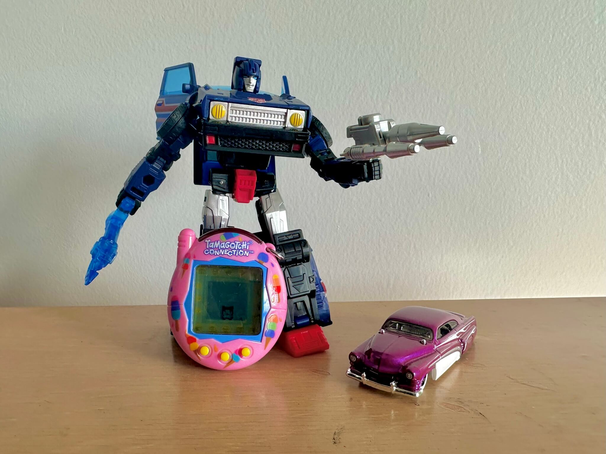

emjay • fish
Week 1: A New Beginning
Hello, world! Welcome to what will maybe possibly be my weekly blog where I catalogue all of my different silly collections and interests. This is my way of engaging with my collections beyond just keeping them in boxes or on shelves. I'll even run each week's Tamagtochi for seven days to get a feel for how it works. Now then, onwards!
Tamagotchi of the Week:
Tamagotchi Connection (Relaunch) — Ice Cream
Released July 2024
Name: Creme
I had to go with this for the first week. I grew up with the Tamagotchi Connection line, so when Bandai announced a relaunch I was super excited, and pre-ordered my Ice Cream shell immediately. It's admittedly based on the V3, not the V4 I know so well, but it's still a wonderful little tama. Despite having it around my neck on a lanyard all week, I managed to get Masktchi, one of the poor care characters. Oh well :)
Transformer of the Week:
Legacy Skids
Released 2022
Designed by Mark Maher & Tomoki Tatsumi
I really, really love Skids, I can't help it. I'm a car person, so I gravitate more towards Transformers that look more like recognisable cars, so when I saw this baby pop up on eBay I had to have it. Based loosely on an 80s Honda City, with just enough difference to be legally distinct, this bot's car mode is wonderfully chunky, and the doors opening is an unexpected boon too. I love the transformation and the robot mode as well, what can I say, I'm a Skids fanatic. Maybe that's why I'm collecting all of his mouldmates!
Hot Wheels of the Week:
Hirohata Merc — Pearl Purple
Released 2025
Designed by Brendon Vetuskey
Toy number HRY69 (HYW97)
This is the car that started it all, for better or for worse. I was with my partner, checking a Myer for Transformers, and lo and behold I spotted this thing out the corner of my eye, and I had to have it. Why? Because it's so reminiscent of the Holden Efijy concept car, probably my favourite car ever. The shape, the lines, the colour, it's as close as I'm gonna get to owning one. Aaaaaaand it started a Hot Wheels collection. Go figure. The Hirohata Mercury is a beautiful custom 1951 Mercury Club Coupe, painted in seafoam green, which was the original colour scheme of the Hot Wheels toy too.
Bread Tag of the Week:
Unidentia obtusamaxilla ammon — light brown
Manufactured by Kwik-Lok
Manufacturer code RJ GP-3
You might be thinking, a bread tag? The thing from the top of a loaf of bread? Why yes! I'm part of the small but passionate group of bread tag collectors around the world. U. o. ammon is one of the most prolific bread tags in Australia, but isn't found anywhere else in the world. Same goes for its colour, light brown is common here but unheard of elsewhere. That's why I love this bread tag, it's so standard to me but so special to everyone overseas who I've traded with. Maybe a metaphor for bread tags in general, little pieces of nothing to most, that mean the world to some.
Trucksim Mod of the Week:
ATS Linfox Paint Job Pack
Released February 2019
When I'm not lazy (or rather, when my simrig isn't just a pile of boxes) I do enjoy a bit of trucksim, playing and modding ATS and ETS2. This paint job pack is one
of my favourites, despite being one of the first I released publicly. Linfox is so iconic in Australia, especially the "You are passing another FOX" label on the
back of the trailers. The Freightliner Argosy that I picked for the picture is also quintessentially Australian, and you might see some more sneaking into future posts ;)
You can grab it on Steam Workshop or
TruckyMods!
That's a wrap on week one. Hopefully I haven't scared you off, stay tuned for next week's post!